Research School of Engineering
ENGN8537: Embedded Systems and Real Time Digital Signal Processing
Summary
Term 1
Processor
Power
Peripherals
Memories
Communications
Sensors
Actuators
UI
The architecture of an Embedded System is often thought to contain hardware and hardware interfaces only. Certainly this is the portion of the Embedded System that is typically given to Electronic Engineers to design.
Embedded Systems must interact closely with their environment, so the correct definition and specification of interfaces is certainly of great importance.
Image Credits: CC-BY-SA: Fairphone.org
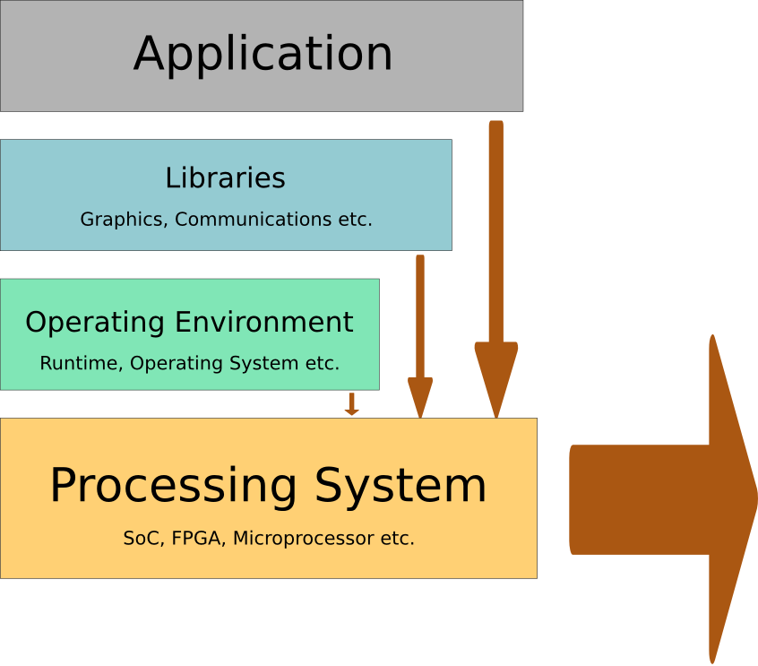
Embedded Systems typically have stricter constraints on power consumption, space, performance any many other attributes that can’t
be described by the hardware alone. The software stack forms an integral part of the overall systems architecture and must certainly be considered when designing the system.
Environment
The interface with the environment is obvious for sensors and actuators. It must also be considered for reliability and usage specifications (will it be used in water? Is it expected to be in reach of a child?).
A more subtle interface with the environment affects every part of the design: The interface with time. This will be covered extensively in future lectures.
User
The interface with the user can also be obvious in a touchscreen, display, speaker etc. Once again there are more subtle user interface specifications required, commonly termed "user experience". These include all the modes of interaction, required training, failure modes and notifications etc.
- Reliability Specification
- Development Strategy
- Testing Strategy
- Marketing Strategy
- Social/Environmental policy
The tight constraints surrounding Embedded Systems don’t stop at physical parameters.
The successful design of an Embedded System has to note the fact that such systems are commodities, but also that they are rarely sold
as a final product. An Embedded System architecture has to recognize the interfaces between the system and the business processes around it, not just the physical processes.
Memory Hierarchy
L1 Cache
L2 Cache
L3…
RAM
Flash
Hard Drive
Network/Cloud
- Fast access (cycles)
- Tight coupling
- Small capacity (MB)
- Implemented as RAM
Most modern CPUs keep recently-accessed data cached in a small amount of memory tightly coupled to the CPU itself. Code rarely controls the cache itself, but can be optimized for good cache performance. L1 Cache is typically accessed in 1-2 CPU cycles while lower level caches are proportionally slower.
In multi-core chips, the lower levels of cache may be shared between cores. This increases
complexity somewhat as the cache has to remain ‘coherent’ across all cores; that is, because cache
data is a copy of RAM data, it exists in at least two places at one and every core must ensure it
accesses the most recent copy.
- Static or Dynamic
- Medium capacity (GB)
- Medium access (100's of cycles)
RAM is what we typically think of when we think of memory. In an Embedded System, some base amount is required for program variables and the rest may be used for buffering, trading off cost against throughput.
Larger RAM devices (such as Dynamic RAM) require code to execute in order to be initialized.
This causes a “chicken and egg” problem; code needs RAM to execute, but the RAM needs some code to have executed. If a device is designed to use Dynamic RAM, it will typically also include a small amount of Static RAM internal to the device for the sole purpose of supporting this initial execution.
- Non-volatile
- Large capacity (10s/100s of GB)
- Slow access (1000's of cycles)
- Finite lifetime
Flash memory is slowly replacing hard drives as the standard for local, non-volatile memory. It is typically a few orders of magnitude slower than RAM and several orders of magnitude slower than a CPU cache. Flash can only be written a finite number of times before it wears out, so much of the technology behind dealing with this type of memory goes in to avoiding, detecting and/or correcting errors. Premium flash devices include Error Correcting Codes, ECC, which are special portions of memory that contain enough information to not just detect, but even fix 1, 2 or several-bit errors.
Wear Levelling
Flash lifetime is extended by
wear levelling. The algorithm chosen dramatically affects device lifetime.
Modern flash memory cards such as SD cards may cheat with their wear leveling algorithms. The FAT filesystem that is typically used on such cards writes data across the card in something approaching a round-robin fashion – in essence it does its own wear leveling. The exception to this is the File Allocation Table block which is written every time any other piece of the card is written.
Given that the FAT gets written many more times than any other piece, the memory may choose to only wear level the section of the card where it thinks the FAT will sit. This means that using a filesystem other than FAT on an SD card may reduce its lifespan 10s or 100s of times!
- Non-volatile
- Very Large capacity (1000s of GB)
- Very Slow access (10,000's of cycles)
- Non-deterministic access times
Hard Drives, or magnetic storage generally, have been around almost as long as computers themselves. They are still the de-facto standard for high volume, non-volatile storage. They are not often used in Embedded Systems as they are relatively power-hungry and fragile, at least when they are spinning. They also have non-deterministic response time as the magnetic heads need to physically move over the surface of the disk with each new request.
- High Reliability
- Very Large capacity (+1000s of GB)
- Very Slow access (1,000,000 cycles)
- Non-deterministic access times
Network storage is becoming more fashionable as markets become less about the Embedded Device itself and more about the service it can offer. Having the service state data live externally to the system itself streamlines upgrades and can drive down system costs by centralizing much more of the system than would traditionally be the case.
Network storage has the obvious drawbacks though – the network is a weak link, both in terms of uptime and reliability, but also in terms of security.
Programming Languages
Compiled
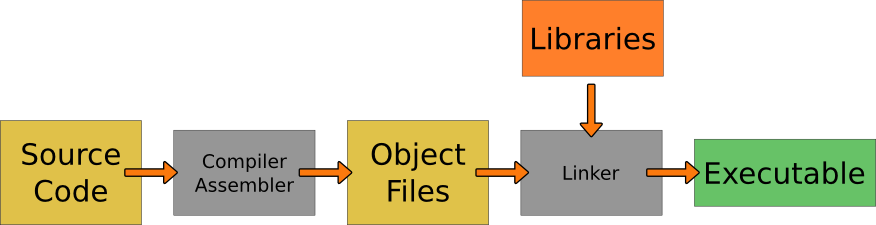
Precompiled code is typical of programming languages such as C, C++, ADA etc. Precompiled code doesn’t incur run-time overhead translating the programmer’s wishes to actions, however it offers less flexibility than other options.
Compiler: Source Code to Assembly
Assembler: Assembly to Binary. Does not resolve symbols.
Compiler and Assembler are specific to a particular platform.
The compiler takes source code and generates machine language assembly mnemonics (written instructions such as MOV, ADD). The assembler takes this assembly, along with any that has been manually written and generates the binary object files. References to memory locations remain in symbolic form – the object file doesn’t yet know where in memory everything is going to end up.
The compiler and assembler are typically invoked with a single instruction, the intermediate assembly mnemonics are stored in a temporary file and removed upon successful generation of the object file.
The compiler is responsible for most optimizations and generation of platform-specific code. When choosing hardware, it must be selected to be compatible with the target compiler.
Linker: Object Files to Executable
Resolves symbols between object files and libraries.
The Linker combines multiple object files (typically one per source file) along with external libraries, joins them all together in a single executable then goes through and resolves all symbols. Symbol resolution is the process of going through the executable, finding instructions that reference memory (load, store, function calls etc.) and inserting the correct memory location in to the instruction.
JIT/Intepretted
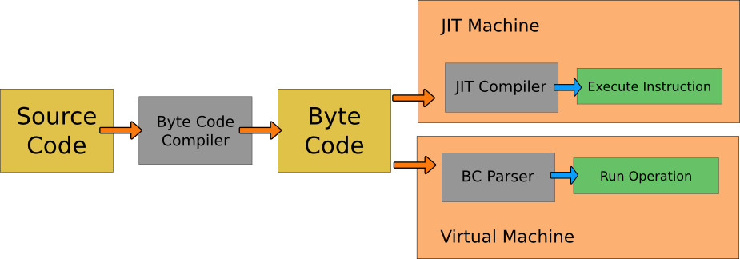
Just-in-time (JIT) compiled code has two processes, one on done before-hand and one done while the program runs. The intermediate representation is called “Byte Code”
Compiler: Source Code to “virtual” Assembly (Bytecode)
Bytecode is like assembly, but not tied to a particular architecture.
Bytecode can be run on multiple machines/architectures. It can't run by itself though, it requires runtime support on the target machine.
JIT: Compiles the BC to the platform's Assembly then executes it directly
Interpretted: Parses the BC to find what action to perform, then calls a function to perform the operation.
JIT
- Slow Compilation
- Fast Execution
- Good Optimization
- JIT hard to port
The JIT paradigm adds some overhead to the runtime process as the translation from byte code to machine instructions has to be done before the instruction can actually be executed. This sounds like it would take a lot of overhead, but modern JIT compilers might add just a few percent to the execution time. JIT code means that optimization and generation of platform-specific codes are left to the platform itself, the same byte code can then be run on multiple machines. If your Embedded System and your development machine use different architectures, you can still run a single lot of code on both.
The platform itself is also usually in the best position to determine which optimizations to apply, so the overhead of JIT compilation may be reclaimed through smart application of code optimization.
Interpretted
- Fast Parse
- Slow Execution
- Some Optimization
- VM easy to port
Interpreted code has the same portability advantages as JIT code but because the code is run in a completely controlled and isolated fashion (inside a Virtual Machine), there is the possibility for increased security.
JIT compilers are widely recognized as the future of this kind of technology and are slowly replacing run-time interpreters. One exception is on obscure architectures as Virtual Machines are typically written entirely in C and can be compiled for anything supported by that compiler. JIT compilers have to be written, at least partially, specifically for a target architecture as it has to know which machine instructions to output.
Languages
Compiled
Older Languages, low-level code
JIT/Interpretted
New Languages, portability required.
Precompiled languages: C, C++, ADA etc. Typically older, more established languages but still very commonly used in Embedded Systems.
Much low-level code such as the Linux Kernel are written in precompiled languages as there isn’t necessarily any platform upon which the JIT compiler or Virtual Machine can run.
JIT languages: Java, .NET, Dalvik since Android 2.2, Python, Javascript in some browsers. Most modern languages were either designed to be interpreted but have subsequently had JIT compilers written, or were designed for JIT execution from the start.
Interpreted languages: Typically older versions of the JIT languages above.
Processor Architectures
CISC
- Memory-efficient
- Complex processor design
- Slow per-instruction
- Hard to pipeline
Complex Instruction Set Computer vs Reduced Instruction Set Computer. These two terms reflect two different philosophies in the design of a processor’s instruction set and, in turn, the processor architecture.
Before the 1970s, all computers were of CISC type. Memory was the supremely limited resource of the time, hardware wasn’t so much of a problem, so the focus was on packing the maximum amount of complexity in to the minimum number of instructions.
Memory is now relatively cheap and the focus has moved to performance. This favours the RISC style as simpler instructions are faster to execute
CISC characterized by
- Complex Addressing modes
- Instructions span multiple (and variable) words
- Specialized instructions implement particular functions
- Operations can be performed directly on memory locations
- Memory-to-memory transfers
- Small program sizes
RISC
- Efficient implementations
- Larger program sizes
- Efficient to pipeline
RISC characterized by
- Simple addressing modes
- Single word, fixed length instructions
- Small instruction set of general purpose instructions
- Operations only performed on registers
- All memory accesses though a Load/Store architecture
- Instructions implemented in (the same set of) discrete phases
- More instructions are required to implement functionality
Canonical RISC
Fetch
Decode
Execute
Memory
Writeback
Get the instruction out of memory
Break the instruction down to determine required registers and functional units. Read registers.
Perform memory operations
Write results to the destination register
Pipelining
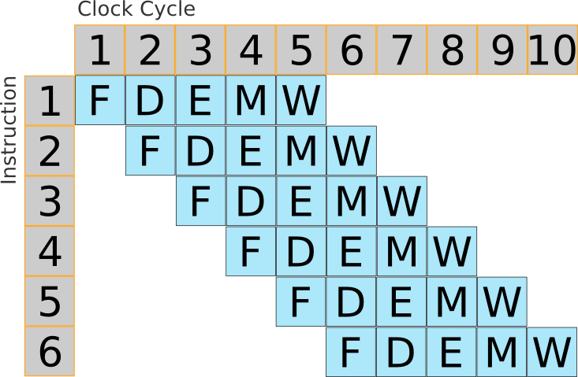
The core observation of pipelining is this: Each instruction must take five clock cycles to complete, but you may execute more than one instruction at a time!
By breaking each instruction in to exactly the same number of pieces like this, each section of the processor can be fully utilized at every point in time.
Why keep the ME or WB stages for instructions that don’t need them? Because keeping instructions
the same as each each other, they can be pipelined and the overall utilization increases significantly.
Cache
Direct Cache
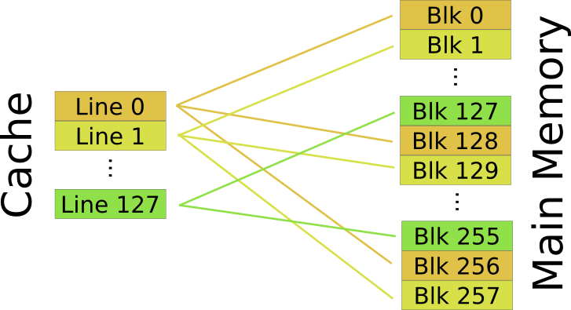
The cache is, of course, smaller than main memory so some algorithm has to be used to map a main memory location to a cache line. The simplest algorithm is called Direct Mapping. In this scheme, each memory block is stored in a cache line of the same address modulo the cache size. For example, a cache of 128 blocks will store memory block 134 in cache line number 6. DM Caches are simple but there may be contention even when the cache isn’t full.
Associative Cache
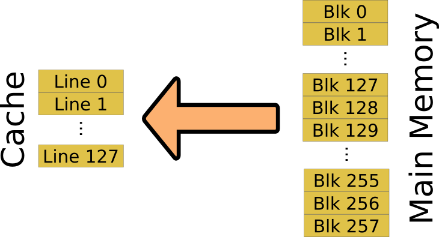
An Associative Mapping is the most flexible cache arrangement in which any memory location can be stored in any cache location. If the cache isn’t full, each new memory block can just take an empty slot. If the cache is full, the cache line to evict is chosen typically using a Least Recently Used algorithm. Complexity comes from finding where in the cache a particular memory block has been put when it is next needed.
Set Associative Cache
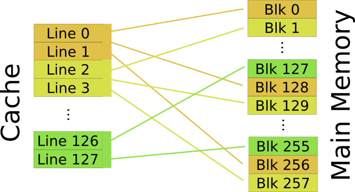
Almost all modern caches are Set Associative. These combine the best features of each of the previous methods, as each memory location “short lists” a set of cache lines based upon its address modulo the number of sets, then the entry to evict from the set is chosen by an LRU algorithm as with an Associative cache.
Cache must store more than data: It must store where that data came from and how old it is.
This metadata is generally called the tag data. It is not cache content as such, it's the extra information that allows the cache to operate correctly.
Note that the age data is only required for Associative and Set Associative type caches that require an LRU algorithm.
Cached Writing
Cache strategies discussed previously assume a read access, but what happens for a write?
Writethrough
New value is written to both the cache and the main memory locations at once.
- Writes only the changed value
- Writes every time that value is changed
If the memory is in Cache, what should a write do: Write-back or Writethrough? In a write-through cache, a write to a memory location in Cache will write the new value to the cache line and the memory location.
Writeback
New value is written only to the cache. Main memory is updated when the cache line is evicted.
- Writes all values in the line, even if only one has changed
- Writes only once, even if a value has changed several times
Write-back writes the new value to cache and marks it dirty; it is then written to main memory only when the line is evicted.
Write-through generates unnecessary writes if the memory location is written several times in sequence. Write-back generates unnecessary writes if only one location in the cache is changed, as the whole line must be written back.
SIMD/Stream
SIMD
ARM A8 can execute two independent arithmetic instructions at once; it is Superscalar.
Super: More than one instruction per clock cycle
Scalar: One piece of data per instruction
Is there such thing as Vector execution: More than one piece of data per instruction?
SIMD: Single Instruction, Multiple Data.
In the A8 example, two additions (say) can be done at a time but it requires two instructions.
Pushing further, what if several registers could be loaded with inputs and a single instruction issued to perform an operation on all of them at once? This is called Single Instruction Multiple Data (SIMD) or Vector Execution (as opposed to [super]scalar execution). Most modern processors can perform some SIMD operations.
Some material and graphics in this section inspired by the Cell Programming Tutorial: https://www.kernel.org/pub/linux/kernel/people/geoff/cell/ps3-linux-docs/CellProgrammingTutorial/
Vector Registers
Vector Registers may be any size, but they can be partitioned in different ways. SIMD instructions take vectors as inputs.
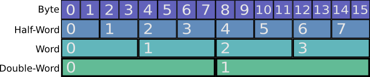
It is possible to do SIMD within a slightly modified ALU: For example, a 32-bit ALU may be able to be programmed to do four independent 8-bit operations at once, rather than a single 32-bit one. More commonly though, the processor is augmented with special “vector” registers that are much bigger than the usual.
These vector regs are typically 128-bits long. As such, the a SIMD processor can typically execute 16 8-bit operations at once, down to
two 64-bit operations. Bigger vectors are of course possible however memory bandwidth becomes an increasingly large issue. No good being able to execute quickly if there’s no data.
Stream Processing
Vector processing applies the same operation to multiple pieces of data.
Stream processing applies multiple operations to the same piece of data.
Vector operations can be thought of as extending data operations “sideways”, allowing more things to be done with a single instruction. What about extending the operations “lengthways”; allowing a single instruction to describe multiple operations on the same data? This is called Stream Processing.
It is a common paradigm in fields from computer vision to networking - anywhere data undergoes significant but consistant transformation.
GPU
Stream Multiprocessors
Contain:
- Stream Processor cores
- Special Function Units
- Caches
- Memory
- Double-precision hardware
- Multi-Instruction Issue
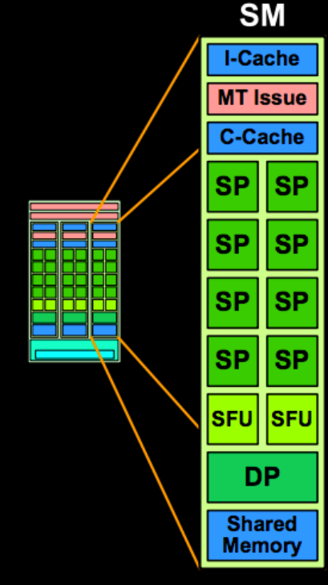
A Stream Multiprocessor (SM) here is roughly equivalent to a Stream Processor from the previous lectures in that it can perform a sequence of operations on incoming data. Modern SMs are more powerful than the stream concept before as they aren’t strictly linear, they may throw away data chunks halfway through, perform conditional operations, split and merge streams internally etc. In terms of graphical operations, these may be things like only rendering pixels that are actually visible.
An SM contains Stream Processors (SPs) which are more limited than the previous definition - each one can perform only a single operation.
Real Time
The Real Time
Pragmatically, Real Time is simply an appropriate and consistant time scale for the problem at hand.
A Real Time system depends not only on the logical correctness of a result, but the time at which that result was delivered.
Classification
| Hard | Single failure leads to severe malfunction |
| Firm | Results are meaningless after deadline
Only multiple or permanent failures threaten the system |
| Soft | Results may still be useful after deadline |
Processor Determinism
High performance processors get that way by sacrificing plenty of things, determinism among them.
In fact, modern processors are so non-deterministic, they are actually a useful source of cryptographic entropy. See for example the
HAVEGE Project. Note that worst-case execution time is usually still bounded, just not deterministic.
Local Drift
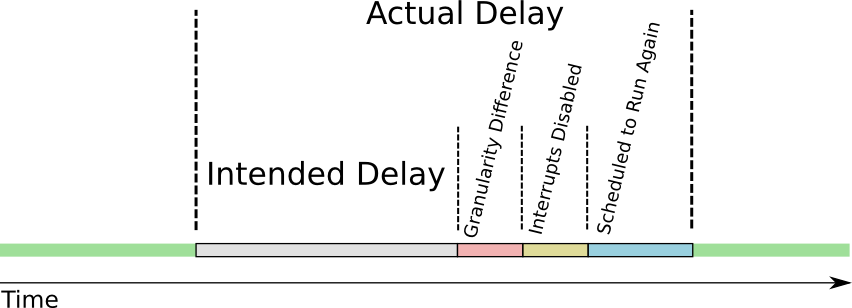
But the semantics of primitive delays aren’t as one might expect. They’re precise only in their lower bound. In English, rather than “Stop the task then run again after n”, “Stop the task, then after the CPU’s idea of n, make it eligible to be run again”.
Operating Environments
Operating Environments

An Operating Environment is made up of the executive, primitives to control access to resources, devices drivers and other ‘general purpose’ utilities. The central part of the operating environment of an embedded system is the executive though, so from here we will use the terms ‘operating environment’, ‘scheduler’ and ‘executive’ interchangeably. The term ‘operating system’, distinct from operating environment, will be defined later.
Mechanism of Pre-emption
In order for the executive to make the decision to preempt the running task, it requires the CPU itself. The executive must preempt the running task to determine whether it should preempt the running task?!
The answer is to use a special interrupt, generally triggered from a timer.
RT Scheduling
Comparison
EDF
- Complex to implement
- Safe to 100% utilization
- Any (all) thread(s) may miss deadline when oversubsribed
RMP
- Simple to implement
- Cannot schedule to 100%
- Low-priority threads always miss deadline first
The fact that static priortiy schemes have well-defined failure modes (lowest priority misses first) is often highly desirable.
EDF not only doesn't have this property, but a single overrun can lead to a cascade of missed deadlines from which is may never recover (without intervention).
Linux Scheduling (CFS)
Priority
Splits CPU ratiometrically. Two tasks with the same priority will get the same share of the CPU. A task with double the priority of another will get double the share of the CPU.
Heirarchy
Can split the CPU ratiometrically on other things too; e.g. two users of the same priority get the same share of the CPU. Within each User, processes can be scheduled as usual, appearing to run on a CPU half as powerful.
Latency
No guarantees on latency. Any process of any priority can preempt any other. The latency for a particular task to get CPU time is a function of the running behaviour of every other process on the system.
COW
The parent and child must have their own copy of memory
The parent and child must have their own copy of any memory that differs
The parent's memory is marked Copy on Write and is only duplicated if either the parent or child tries to write to it.
Communication and Synchronization
Long Variables
Thread 1
LOOP: Ld r1, low([i])
Ld r2, high([i])
Add r1, r1, #1
AdC r2, r2, #0
St low([i]), r1
St high([i]), r2
Call _delay_1ms
Jmp LOOP
Thread 2
LOOP: Ld r3, #0
St low([i]), r3
St high([i]), r3
Call _delay_500ms
Jmp LOOPAssume i is 16 bits and we are executing on an 8 bit microprocessor (each memory access is 8-bits). Further, suppose i starts this snippet at 499, by the end i will be neither 0 nor 500, it will be 244.
Semaphores
Thread 1
while(1) {
wait(lock);
i++;
signal(lock);
_delay_1ms();
}Thread 2
while(1) {
wait(lock);
i = 0;
signal(lock);
_delay_500ms();
}
Waiting on a semaphore blocks a thread's execution until the lock is released.
Signalling a semaphore marks it as released and unblocks all threads waiting for it.
As a result, only a single thread can be in the critical section between the wait and signal calls for any given lock.
Must be implemented with help from your scheduler/executive.
int a;
int b;
Semaphore lock_a;
Semaphore lock_b;
Thread 1
wait(lock_a);
wait(lock_b);
a = a + b;
signal(lock_b);
signal(lock_a);
Thread 2
wait(lock_b);
wait(lock_a);
a = b = 0;
signal(lock_a);
signal(lock_b);
Same code but a different pre-emption point. Thread 1 is now holding lock_a while waiting on lock_b; Thread 2 is waiting on lock_a while holding lock_b.
Device/Driver Model
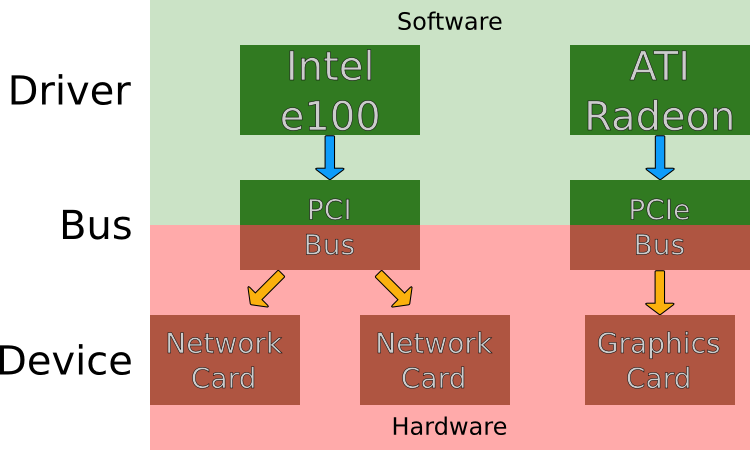